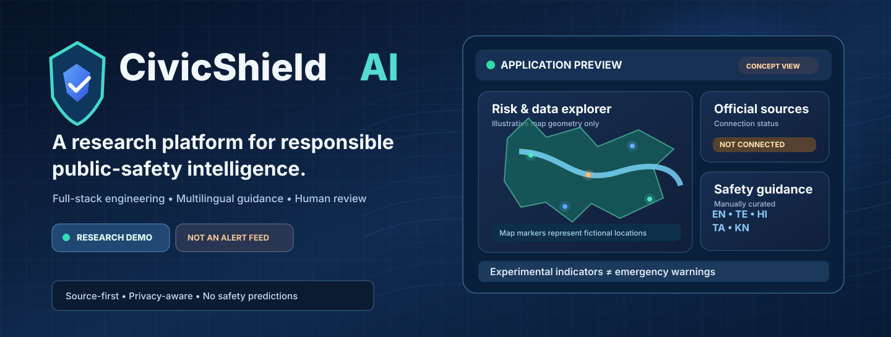
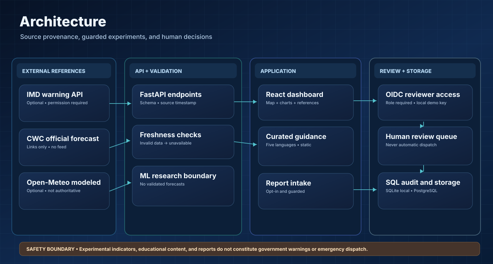
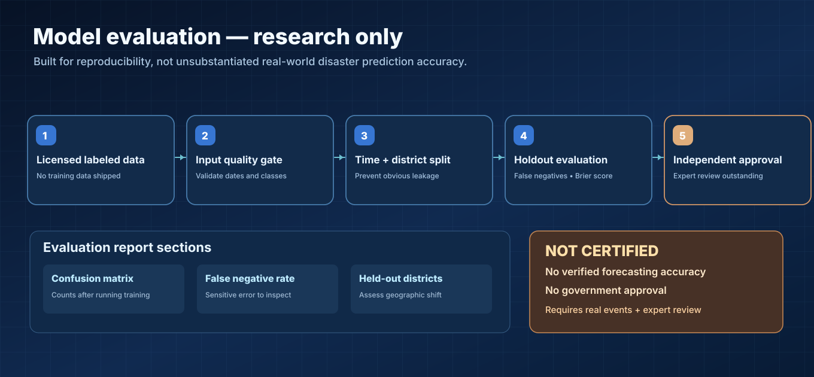
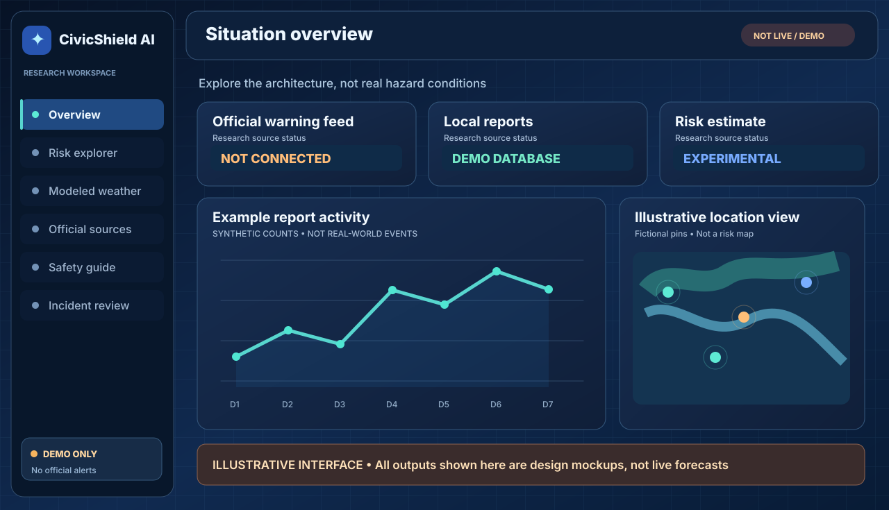
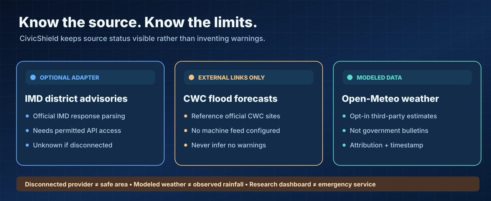

Original project concept illustration. No live warnings or validated hazard predictions are shown.
FULL-STACK AI/ML RESEARCH PORTFOLIO
Building responsible AI for public safety research
A research demonstration combining weather-data provenance, experimental hazard classification, source-linked preparedness guidance, interactive dashboards and human-reviewed citizen reports.
Technical architecture

Data provenance
Official-source adapter schema validation, timestamp freshness, attribution and clearly separated third-party modeled data.
Reproducible ML
Chronological and geographic holdout scripts, experimental metrics and fail-closed limitations; no operational model certification.
Full-stack platform
React, FastAPI, SQLAlchemy, interactive map, test automation and optional provider-backed identity.
Five languages
Curated multilingual preparedness guides and a source-linked educational document search.
Human incident review
Controlled report intake, duplicate review, restricted access, geographic exploration and audit trail.
Clear production gates
External credentials, real domain data, scientific evaluation, security, hosting and authority authorization remain distinct milestones.
Fictional case study · Built for interviews
A reproducible, fictional 24-hour scenario explains source attribution, time/freshness checks, human review and scientific-model limitations. All counts are invented; no reports are submitted.

Visual project walkthrough

Conceptual interface illustration, not a live screenshot.
Official-source and third-party boundaries

Verify real information at its source
For genuine advisories use IMD, CWC Flood Forecasting, and NDMA. No authority endorses or operates this research demo.